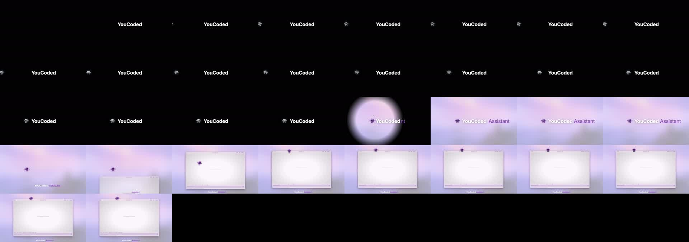
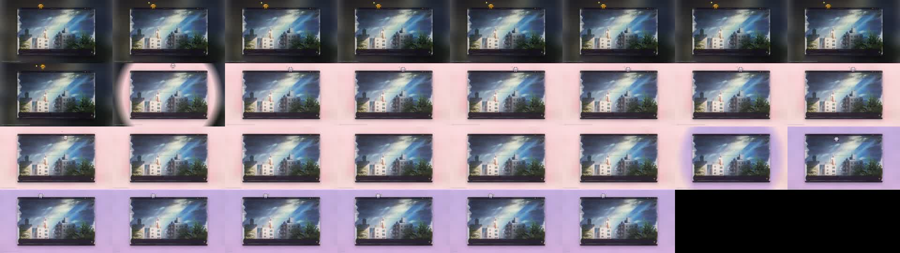
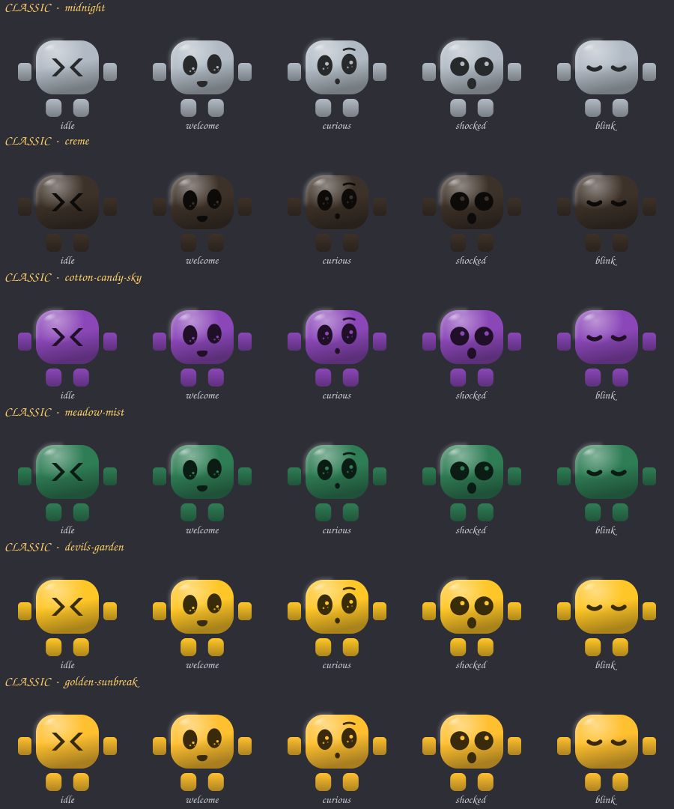
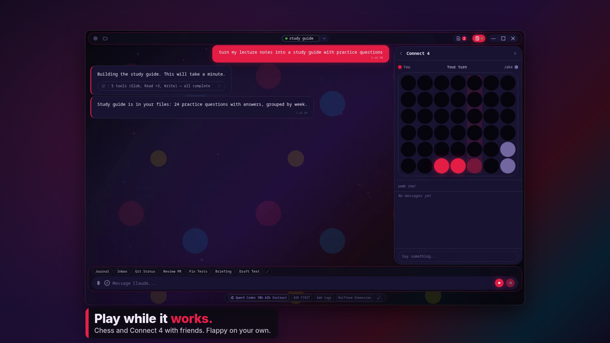
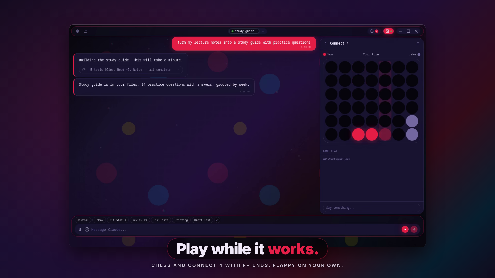
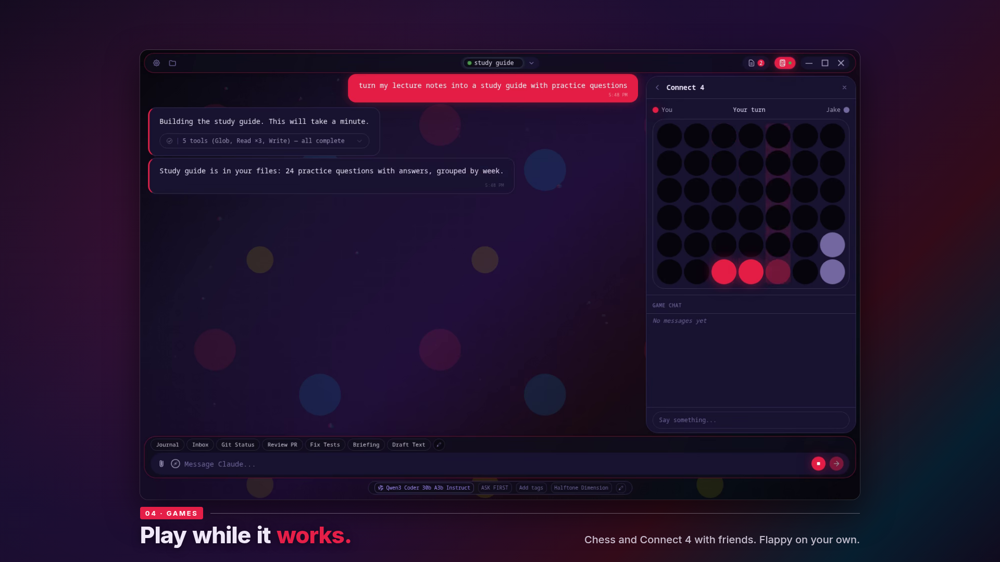

Check-in 3: the mascot, the faces, the captions
Two short clips built on the new motion engine, the three face styles, and the three caption designs. Nothing goes into the film until you've answered the four questions at the bottom. Every round of your notes on these is a one-minute render.
1 · The intro (your storyboard, as a clip)
13 seconds. Black, silent, the white wordmark. The host peeks in around the left edge, looks left and right, steps in, walks across with a small careful gait and swinging arms, stops just left of the Y, looks it up and down, winds up and punches. The music starts on the hit; the screen bursts into Cotton Candy Sky from the fist with sparks; "Assistant" rolls out of the wordmark's right side; the host changes costume in the burst with a poof and a shocked face; the wordmark hands off to the caption band and the app window rises on bar 1; the host hops onto its title bar. Sound is in the clip.

What to look for: the crouch before the punch and the lunge through it; the lean into the walk; the eyes actually looking (left, right, then at the Y); the blink before the strike; the squash on landing when it hops onto the window.
2 · Everything else the host does in the film
10 seconds, on a stand-in window. Idle on the title bar (breathing, a blink, a glance down); a hop to a new perch that crouches first, stretches on the way up, leans into the travel, tucks at the top, changes costume with a poof at the apex, and lands with a squash that settles in two small bounces; the contact shadow under its feet shrinks in the air; the dive into the window with a poof where it lands; the pop back out in a third costume; the wave. This hop is what happens on every cut of the film.

3 · The faces (settled)
Your call, 2026-09-04: the Golden Sunbreak and Strawberry Kitty eyes are the model, and eyes must never be lighter than the body. The two new styles are gone. What was wrong on the light themes: the rig paints its eyes in the theme's ink colour, which is white on Cotton Candy, Meadow Mist and Halftone, so the eyes glowed. The host now draws its eyes and mouth in a deep shade of its own body colour on every theme, exactly the way the golden rig's dark-brown-on-gold works. Below: the rig's own faces on every tint the film uses, with that ink. Both clips above use these.

The same white-eyes problem exists in the app itself on those themes; that is a one-line theme-engine fix for a separate PR, your call.
4 · The captions
Same frame, three treatments. The payoff word is in the theme accent in all three; the font follows the theme as before.



- The intro — notes on the motion, or "go".
- Hops, dive, wave — notes, or "go".
- Caption design — A, B or C.